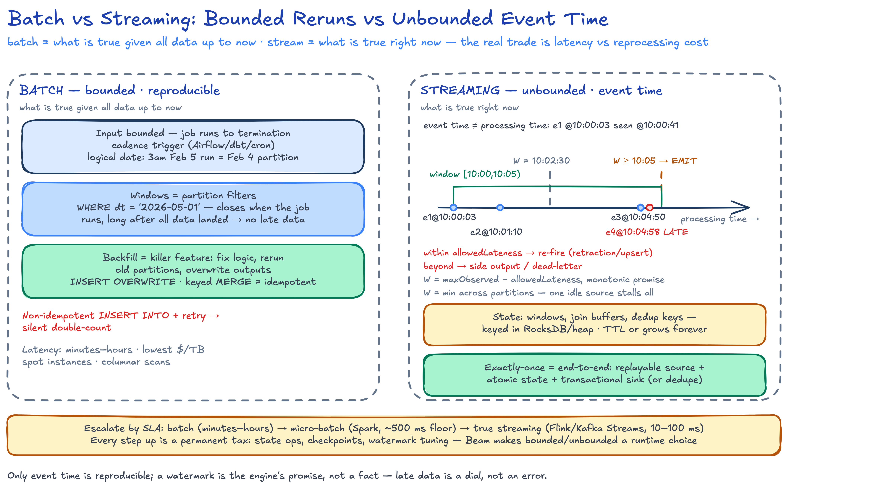
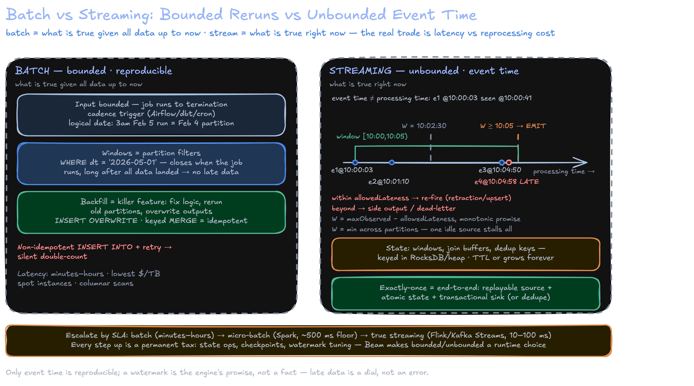

Batch vs Streaming
Batch answers "what is true given all data up to now" over bounded input; streaming answers "what is true right now" over unbounded input — the real trade is latency vs reprocessing cost, not throughput.
- 1Pick the domain
- 2Reason in event time
- 3Trust the watermark
- 4Emit when W passes the end
- 5Handle the stragglers
- 6Bound your state
- 7Make exactly-once end-to-end
- 8Escalate by SLA
W = maxObservedEventTime − allowedLateness (typically 20 s–5 min) is a monotonic promise "no event ≤ W arrives later"; it is the engine's permission slip to close a window.[10:00,10:05) fires once W ≥ 10:05; in parallel pipelines W = min across partitions, so one idle source stalls all progress.

Batch: Scheduled, Bounded, Reproducible
- Input bounded, job runs to termination. Triggered on a cadence (Airflow/dbt/cron) with a logical execution date: the 3am Feb 5 run processes Feb 4's partition.
- Windows = partition filters:
WHERE dt = '2026-05-01'. No late-data problem — the window "closes" only when the job runs, long after all data landed. - Backfill is the killer feature: fix logic, rerun old partitions, overwrite outputs. Deterministic code over bounded input → reproducible results.
- Retry safety = idempotency. Non-idempotent
INSERT INTO+ retry silently double-counts — the classic batch production bug.
-- rerun-safe patterns; key outputs by (pipeline, logical partition)
INSERT OVERWRITE daily_metrics SELECT ... WHERE dt = '2026-05-01'; -- replace
MERGE INTO daily_metrics t USING staged s ON t.dt = s.dt
WHEN MATCHED THEN UPDATE ...; -- keyed merge
- Latency: minutes–hours (schedule + runtime). Cost per TB: lowest — spot instances, columnar scans, no per-record overhead.
Streaming: Event Time, Watermarks, State
| Time domain | Definition | Use for |
|---|---|---|
| Event time | When the event occurred (device clock) | Correctness: windows, billing, analytics |
| Processing time | When the system sees the event | Lag monitoring, alerting |
| Ingestion time | When the pipeline received it | Compromise; rarely correct |
- Events arrive out of order (offline mobile, retries, cross-region): a 10:00:00 click processed at 10:00:41. Only event time is reproducible.
- Watermark
W = maxObservedEventTime − allowedLateness(typically 20 s–5 min): monotonic promise "no event ≤ W arrives later"; window emits when W passes its end (Flink event time). Too tight → drops; too loose → delayed results + longer state. Parallel pipelines: W = min across partitions — one idle source stalls progress. - State (window contents, join buffers, dedup keys) lives keyed in RocksDB/heap; needs TTL or it grows forever.
- Checkpoints (Flink aligned barriers): async distributed snapshot of state + source offsets; on failure restore and replay from Kafka (checkpoint docs).
processing time ---------------------------->
events: e1@10:00:03 e2@10:01:10 e3@10:04:50 e4@10:04:58(LATE)
watermark W: 10:02:30 10:03:40 10:07:00
window [10:00,10:05) ── W≥10:05 → EMIT (e3 in window)
e4 arrives after W passed 10:05:
within allowedLateness → re-accumulate, re-fire (retraction/upsert)
beyond → side output / dead-letter
| Window | Semantics | Use |
|---|---|---|
| Tumbling | Fixed, non-overlapping (5 min) | Rollups, billing intervals |
| Sliding | Size 1 h, slide 5 m → each event in 12 windows | Moving averages |
| Session | Gap-based, closes after inactivity | User sessions |
Allowed lateness is a correctness-vs-latency dial from the Dataflow Model. Name the three levers: watermark delay, allowed lateness, side outputs — and that idle parallel sources freeze W.
Lambda vs Kappa
| Dimension | Lambda (Marz) | Kappa (Kreps) |
|---|---|---|
| Codepaths | 2 (batch + speed) — drift risk | 1 |
| Backfill | Batch layer over full history | Replay log (long/compacted retention) |
| Ops | 2 stacks, 2 deploy cycles | 1 stack, heavy retention/state ops |
| Consistency | Eventual merge of two views | Single view |
| Fits | Legacy batch estates, huge-history recompute | Log-centric orgs (Kafka + Flink) |
- Micro-batch (Spark Structured Streaming): ~500 ms–seconds floor, batch SQL reuse, coarse watermarks. True streaming (Flink/Kafka Streams): 10–100 ms, first-class watermarks/session windows.
- Beam: bounded vs unbounded is a runtime choice — one API, windows/triggers/accumulation as config, runner executes (Beam guide).
Delivery Semantics
| Guarantee | Meaning | Cost |
|---|---|---|
| At-most-once | May drop, never duplicate | Cheapest; lossy |
| At-least-once | Never lost, may duplicate | Idempotent sinks |
| Exactly-once | Each record affects output once | Transactions end-to-end |
"Exactly-once" only exists end-to-end (Confluent); three layers must align:
- Source replayable — offsets stored and restored atomically with state (offsets inside the checkpoint).
- State exactly-once — Flink checkpoint snapshot/restore.
- Sink exactly-once — Kafka transactions (
read_committed, KIP-447), or idempotent upsert into DB/Iceberg by primary key.
"Exactly-once = at-least-once processing + idempotent or transactional effects." Native in Kafka+Flink; no engine gives EOS into a plain non-transactional HTTP sink.
Choosing Between Them
Worked Example — 100k ev/s clickstream: batch or streaming?
Ingest: 100k ev/s x 200 B = 20 MB/s = 1.7 TB/day raw
State: 10 M users/h x 100 B = 1 GB/window; sliding 1h/5m = 12 GB
Decision: fraud SLA < 5 s → streaming (20 MB/s at 10 tasks); hourly
dashboard → batch is cheap. Fraud SLA is product-correctness
→ true streaming; batch for backfill only. Hourly batch =
~59 min mean detection latency — fails SLA.
| Question | Batch | Micro-batch | True streaming |
|---|---|---|---|
| Latency floor | > 15 min | 1–15 min | ms–sec |
| Backfill | Trivial (rerun) | Moderate | Replay log |
| Cost/TB + ops | Lowest | Low–med | Highest (always-on, state, W tuning) |
Use cases:
- Fraud detection → true streaming: score per event < 5 s, session windows per card/user, retract on late evidence.
- Monthly billing → batch: complete-input determinism, auditable reruns,
INSERT OVERWRITEpartitions; latency irrelevant. - ML features → hybrid: online features via streaming (freshness, point-in-time correctness), offline training via batch over the same logic — Beam /
FOR SYSTEM_TIME AS OFkeeps them consistent. - Frequent reprocessing → Kappa-plus-lakehouse: log lands in Iceberg/Hudi/Delta, batch rides the same tables — one codepath, cheap history.
Start batch → micro-batch when freshness measurably hurts decisions → true streaming only when latency is a product requirement. Every step up is a permanent tax: state ops, checkpoints, watermark tuning.
Key Takeaways
- Batch = bounded input, deterministic reruns, cheapest per byte; streaming's hard problems are event time, watermarks, state — never throughput.
- Watermarks trade correctness vs latency; late events handled by allowed lateness, retractions, or side outputs; idle partitions stall the min-watermark.
- Exactly-once is end-to-end: replayable source + atomic state restore + transactional/idempotent sink; else at-least-once + dedupe.
- Lambda = two codepaths and drift; Kappa = one log but long retention; modern answer: Kappa-plus-lakehouse (log in Iceberg/Delta). Micro-batch for 1 s–15 min, Flink/Kafka Streams for sub-second, Beam unifies the API not the ops.
Interview Lens
- "Why is exactly-once hard?" → aligned barriers freeze a consistent cut; state + offsets in one artifact; sink must commit atomically or dedupe by key.
- "Job double-counts on retry" → non-idempotent append; fix with partition overwrite or keyed MERGE — same dedupe discipline as streaming sinks.
- Lambda vs Kappa → argue drift cost vs retention cost, land on lakehouse middle ground (Flink 10–100 ms, micro-batch ~500 ms floor, watermark lag 20 s–5 min).